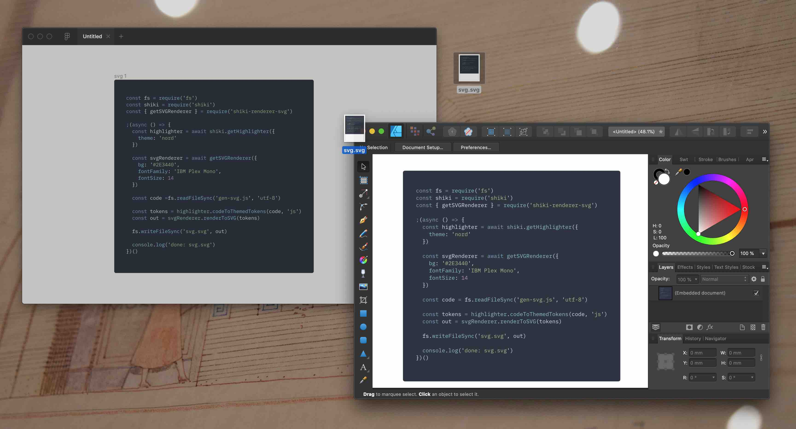
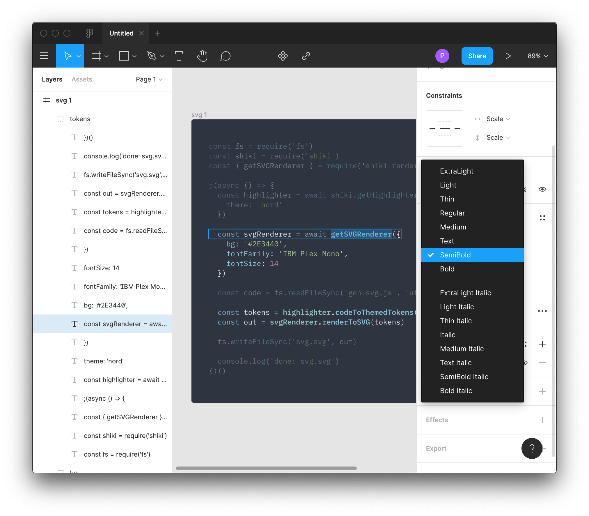
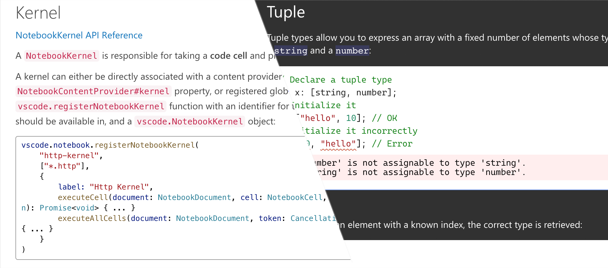
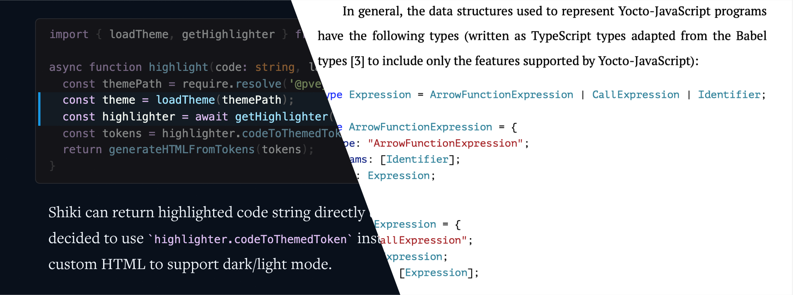

Shiki is a beautiful Syntax Highlighter.
It uses TextMate grammar to tokenize strings, and colors the tokens with VS Code themes. In short, Shiki generates HTML that looks exactly like your code in VS Code, and it works great in your static website generator.
It's simple to use:
const shiki = require('shiki')
shiki.getHighlighter({
theme: 'nord'
}).then(highlighter => {
console.log(highlighter.codeToHtml(`console.log('shiki');`, 'js'))
})
// <pre class="shiki" style="background-color: #2e3440"><code>
// <!-- Highlighted Code -->
// </code></pre>
Here's me using Shiki and markdown-it to generate this page:
const fs = require('fs')
const markdown = require('markdown-it')
const shiki = require('shiki')
shiki.getHighlighter({
theme: 'nord'
}).then(highlighter => {
const md = markdown({
html: true,
highlight: (code, lang) => {
return highlighter.codeToHtml(code, lang)
}
})
const html = md.render(fs.readFileSync('index.md', 'utf-8'))
const out = `
<title>Shiki</title>
<link rel="stylesheet" href="style.css">
${html}
<script src="index.js"></script>
`
fs.writeFileSync('index.html', out)
console.log('done')
})
Why Shiki though? Take a look at this monstrous TextMate grammar. It's what highlights TypeScript code in VS Code. Insane, I know. But it gets the color right.
import * as React from 'react';
import './App.css';
import Hello from './components/Hello';
const logo = require('./logo.svg');
function App() {
return (
<div className="App">
<div className="App-header">
<img src={logo} className="App-logo" alt="logo" />
<h2>Welcome to React</h2>
</div>
<p className="App-intro">
To get started, edit <code>src/App.tsx</code> and save to reload.
</p>
<Hello name="TypeScript" />
</div>
);
}
export default App;
Besides VS Code, TextMate (of course), Sublime Text and Atom all support TextMate grammar. If you can get syntax highlighting to work for your favorite language in any one of them, try to find its grammar and load it in Shiki to syntax highlight it:
const shiki = require('shiki')
shiki.getHighlighter({
theme: 'nord',
langs: [
{
id: 'rockstar',
scopeName: 'source.rockstar',
path: './rockstar.tmLanguage.json' // or `plist`
}
]
}).then(highlighter => {
highlighter.codeToHtml('Shout Rockstar', 'rockstar')
})
Over 100 programming languages are supported out of the box, including a traditional Chinese one, 文言:
Shiki can load any VS Code themes. Just change this line:
shiki.getHighlighter({
theme: 'material-theme-palenight'
})
And you get the above code in Material Palenight.
You can find all bundled themes in shiki-themes, and use them like:
shiki.getHighlighter({
// 'dark-plus' | 'light-plus' => for the classic VS Code feel
// 'github-dark' | 'github-light' => for the GitHub feel
// 'material-theme-*' => for the materialists
// 'min-dark' | 'min-light' => for the minimalists
theme: 'nord'
})
But really, any VS Code theme will do. Here's anotherglitchinthematrix/monochrome:
Embedded language like Vue works great, too:
<template>
<div id="app">
<h1>My Todo App!</h1>
<TodoList/>
</div>
</template>
<script>
import TodoList from './components/TodoList.vue'
export default {
components: {
TodoList
}
}
</script>
<style lang="scss">
#app {
max-width: 400px;
margin: 0 auto;
line-height: 1.4;
font-family: 'Avenir', Helvetica, Arial, sans-serif;
-webkit-font-smoothing: antialiased;
-moz-osx-font-smoothing: grayscale;
color: $vue-blue;
h1 {
text-align: center;
}
}
</style>
For those visually attentive, render your code to SVG,
drop the SVG into Figma, Affinity Designer or Adobe Illustrator,

and use the full arsenal of vector editing tools to enhance your code presentation:

You can also build custom renderers to generate anything — a different HTML structure, SVG, or even images:
const shiki = require('shiki')
shiki.getHighlighter({
theme: 'nord'
}).then(highlighter => {
const tokens = highlighter.codeToThemedTokens(`console.log('shiki');`, 'js')
// default renderer, replace with yours
const html = shiki.renderToHtml(tokens)
})
Shiki is now used on VS Code website to teach VS Code API, and on TypeScript website to teach TypeScript:

Among all usages of Shiki, I like Fatih Kalifa's beautiful presentation most. Leandro Facchinetti has made shiki-latex to format his PhD dissertation, which makes me feel incredibly inspired.

Made by Pine. I enjoy building tools to help others. If you have found Shiki useful, please consider sponsoring my Open Source development. Thank you.